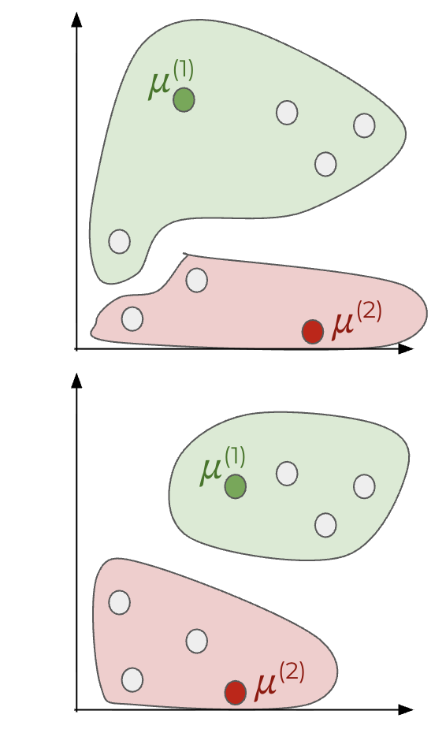

MACHINE LEARNING
We let the algorithm learn the rules!
How does it work?
- TRAINING phase: training set → learning algorithm → hypothesis function h(x) (relating input to output)
- INFERENCE phase: input → hypothesis function → output / prediction
Learning Paradigms
There are multiple ways of training the algorithm (learning paradigms):
- SUPERVISED: The algorithm is given many examples x coupled with their target y.
- UNSUPERVISED: The algorithm is only given training samples; it should learn patterns/relations on its own.
- REINFORCEMENT: The algorithm is rewarded or penalized based on its actions.
Supervised learning
Usually based on a cost (or loss) function. It is essentially a matter of fitting data (inputs x related via some function h(x)): to find the hypothesis function, one must determine the best values for the function's parameters.
This can be achieved by choosing a cost function such as the residual sum of squares used in least squares fitting. Other techniques are also available depending on the specific case.
To reduce (minimize) the cost function, one can use the gradient descent algorithm: parameters are randomly initialized and iteratively adjusted using a (smartly chosen!) learning rate, depending on how far the parameters are from the optimized values.
The mini batch gradient descent method only exploits a bunch of the input data at a time to update the parameters.
Alternatively, one can use likelihood as a cost function and maximise its log by gradient ascent.
ex. linear regression, binary classification.
Unsupervised learning
K-means algorithm. One of the possible tasks this method is suitable for is finding clusters among data. Procedure: randomly initialize a cluster center for each cluster, then assign each input point to the closest cluster center. The cluster center position is then updated as the mean of the position of the assigned inputs; the procedure is iterated until convergence.
